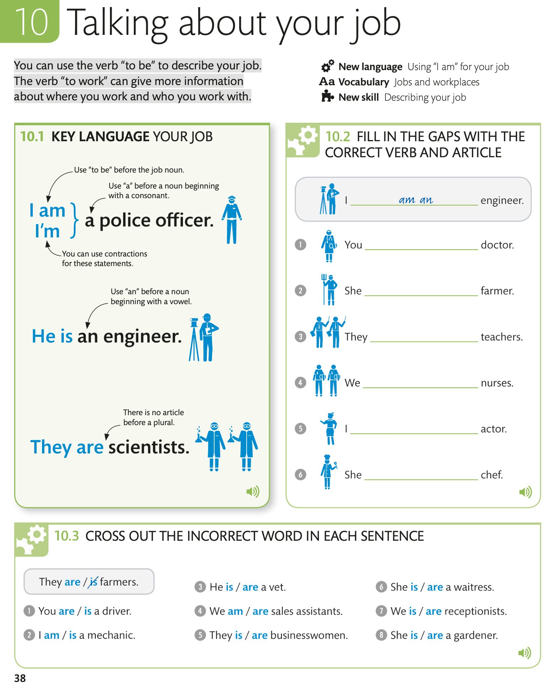
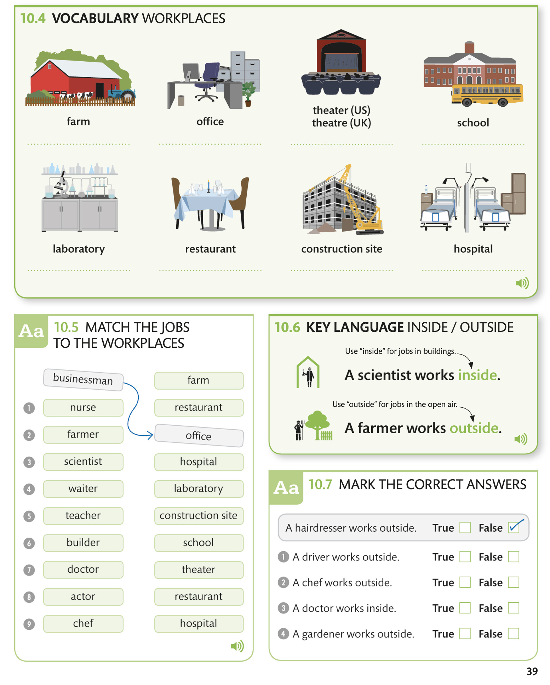
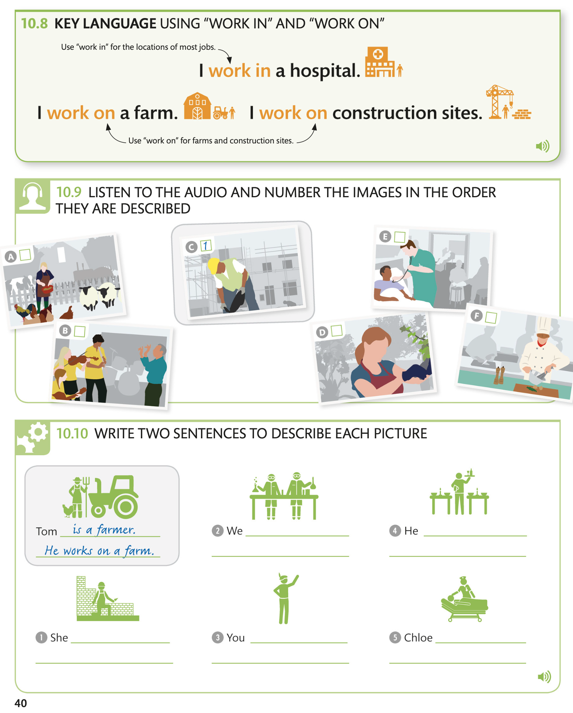
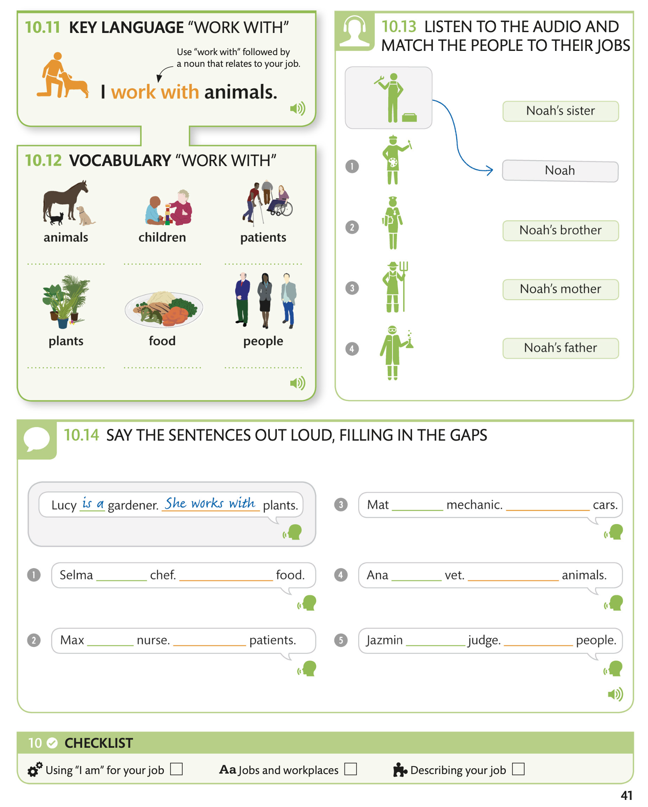

Talking about your job / Говоря о своей работе
You can use the verb “to be” to describe your job. The verb “to work” can give more information about where you work and who you work with.
Вы можете использовать глагол «быть», чтобы описать свою работу. Глагол «работать» может дать больше информации о том, где вы работаете и с кем работаете.




10.11 KEY LANGUAGE “WORK WITH”
Use “work with” followed by a noun that relates to your job.Используйте слово «работать с», а затем существительное, относящееся к вашей работе.
10.12 VOCABULARY “WORK WITH”
10.13 LISTEN TO THE AUDIO AND MATCH THE PEOPLE TO THEIR JOBS
10.14 SAY THE SENTENCES OUT LOUD, FILLING IN THE GAPS
ПРОИЗНЕСИТЕ ПРЕДЛОЖЕНИЯ В ГРОМКО, ЗАПОЛНЯЯ ПРОБЕЛЫ